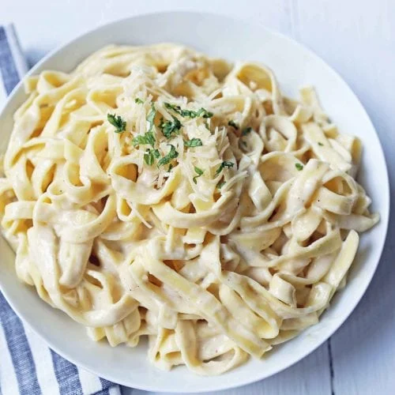

Fettuccine Alfredo

Indulge in the luxurious simplicity of our Creamy Fettuccine Alfredo recipe.
Ingredients
- 12 ounces (340g) fettuccine pasta
- 1/2 cup unsalted butter
- 1 cup heavy cream
- 1 cup grated Parmesan cheese
- Salt and freshly ground black pepper, to taste
- Chopped parsley, for garnish (optional)
Steps
Step 1: Cook the Pasta
- Bring a large pot of salted water to a boil.
- Add the fettuccine pasta and cook according to the package instructions until al dente.
- Drain the pasta and set aside, reserving about 1/2 cup of pasta water.
Step 2: Prepare the Alfredo Sauce
- In a large skillet, melt the butter over medium heat.
- Once the butter is melted, pour in the heavy cream. Stir to combine.
- Reduce the heat to low and let the mixture simmer gently for a few minutes, allowing the flavors to meld.
- Gradually whisk in the grated Parmesan cheese until the sauce is smooth and creamy.
- If the sauce seems too thick, you can add a bit of the reserved pasta water to reach your desired consistency.
- Season the sauce with salt and freshly ground black pepper to taste. Remember that the Parmesan cheese is already salty, so go easy on the salt.
Step 3: Combine Pasta and Sauce
- Add the cooked and drained fettuccine pasta to the skillet with the Alfredo sauce.
- Gently toss the pasta in the sauce until it's evenly coated.
Step 4: Serve
- Divide the creamy Fettuccine Alfredo among serving plates.
- Garnish with chopped parsley if desired.
- Serve immediately while the dish is hot and the sauce is velvety.
Enjoy the rich and creamy goodness of homemade Fettuccine Alfredo as a delightful main course. Remember, simplicity is key in letting the flavors shine through!